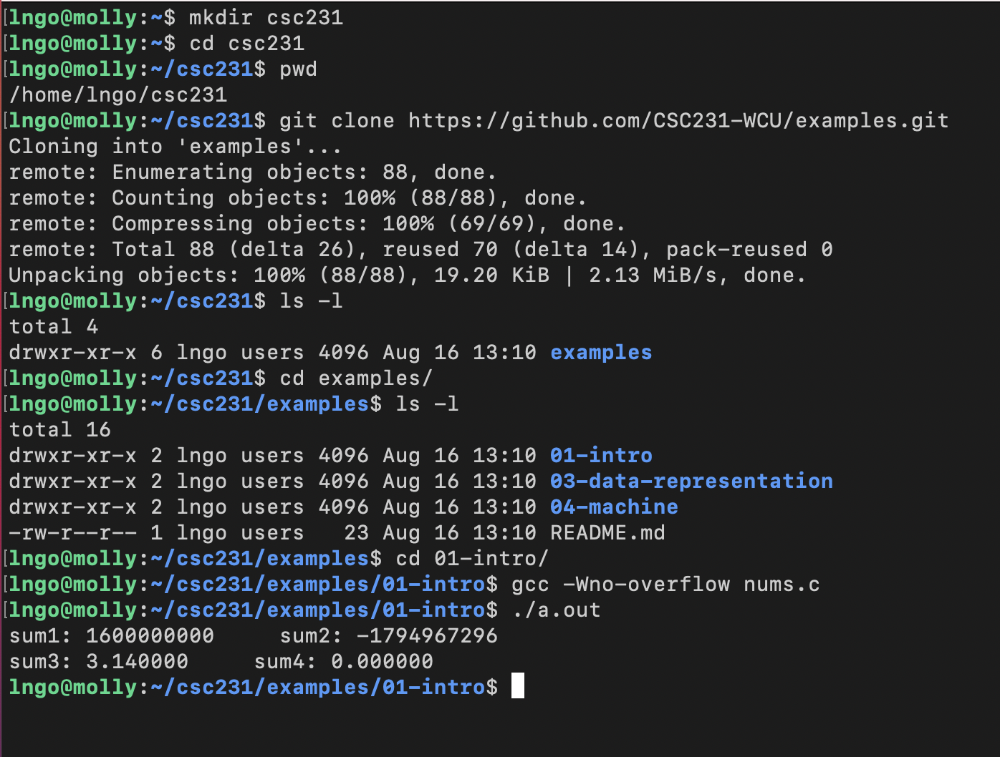
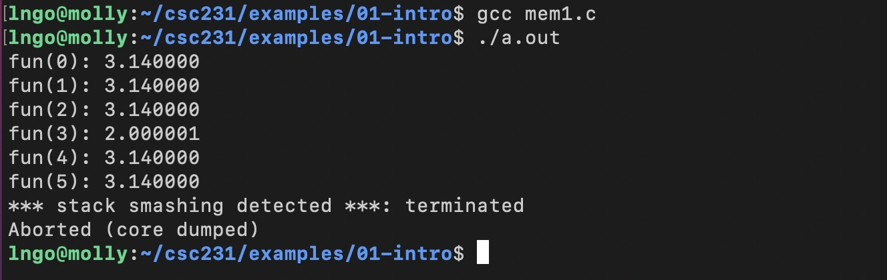

Introduction#
1. Overview#
Systems knowledge is power!
How hardware (processors, memories, disk drives, network infrastructure) plus software (operating systems, compilers, libraries, network protocols) combine to support the execution of application programs.
How general-purpose software developers can best use these resources.
A new specialization: systems programming.
2. Understand how things work#
Why do I need to know this stuff?
Abstraction is good, but don’t forget reality
Most CS courses emphasize abstraction
Abstract data types
Asymptotic analysis
These abstractions have limits
Especially in the presence of bugs
Need to understand details of underlying implementations
Sometimes the abstract interfaces don’t provide the level of control or performance you need
3. Hands-on: Getting started#
Log into molly and run the following commands:
Create a directory called
csc231in your home directory using themkdircommand.Change into that directory using the
cdcommand.
mkdir csc231
cd csc231
Check that you are inside
csc231using thepwdcommand.Clone the Git repository for the class’ examples.
pwd
git clone https://github.com/CSC231-WCU/examples.git
The
git clonecommand will download the repository into a directory calledexamplesinside your current directory, which iscsc231.Run the command
ls -lto confirm thatexamplesexists.Change into
examplesusingcd.Run
ls -lto see how many subdirectories there are insideexamples.
ls -l
cd examples
ls -l
Change into the directory
01-intro.Compile and run the example code
nums.c.
cd 01-intro
gcc -Wno-overflow nums.c
./a.out

4. Computer arithmetic#
Does not generate random values
Arithmetic operations have important mathematical properties.
Cannot assume all usual mathematical properties.
Due to finiteness of representations.
Integer operations satisfy ring properties: commutativity, associativity, distributivity.
Floating point operations satisfy ordering properties: monotonicity, values of signs.
Observation
Need to understand which abstractions apply in which contexts.
Important issues for compiler writers and application programmers.
5. Assembly#
You are more likely than not to never write programs in assembly.
Compilers take care of this for you.
Understand assembly is key to machine-level execution model.
Behavior of programs in presence of bugs
High-level language models break down
Tuning program performance
Understand optimizations done / not done by the compiler
Understanding sources of program inefficiency
Implementing system software
Compiler has machine code as target
Operating systems must manage process state
Creating / ../fighting malware
x86 assembly is the language of choice!
6. Memory Matters#
Random Access Memory is an un-physical abstraction.
Memory is not unbounded.
It must be allocated and managed.
Many applications are memory dominated.
Memory referencing bugs are especially pernicious
Pernicious: having a harmful effect, especially in a gradual or subtle way.
Effects are distant in both time and space.
Memory performance is not uniform.
Cache and virtual memory effects can greatly affect program performance.
Adapting program to characteristics of memory system can lead to major speed improvements
7. Hands-on: Memory referencing bug#
We are still inside
examples\intro-01directory from Hands-on 1.
gcc mem1.c
./a.out

8. Memory referencing errors#
C and C++ do not provide any memory protection
Out of bounds array references
Invalid pointer values
Abuses of
mallocandfree
Can lead to nasty bugs
Whether or not bug has any effect depends on system and compiler
Action at a distance
Corrupted object logically unrelated to one being accessed
Effect of bug may be first observed long after it is generated
How can I deal with this?
Program in Java, Ruby, Python, ML, …
Understand what possible interactions may occur
Use or develop tools to detect referencing errors (e.g. Valgrind)
9. Beyond asymptotic complexity#
Constant factors matter!
Exact op count does not predict performance.
Possible 10:1 performance range depending on how code written (given same op count).
Optimizations must happen at multiple level: algorithm, data representations, procedures, and loop.
Must understand system to optimize performance
How programs compiled and executed.
How to measure program performance and identify bottlenecks.
How to improve performance without destroying code modularity and generality.
10. Hands-on: Memory system performance#
We are still inside
examples\intro-01directory from Hands-on 1.
gcc mem2.c
./a.out
11. Does computer just execute arithmetic and control flow operations?#
They need to get data in and out
I/O system critical to program reliability and performance
They communicate with each other over networks
Many system-level issues arise in presence of network
Concurrent operations by autonomous processes
Coping with unreliable media
Cross platform compatibility
Complex performance issues
12. Layered Services#
Direct communication between applications and hardware components are impractical due to complexity.
Operating systems provide much-needed interfaces between applications and hardware through:
OS/application interface:
system calls.HW/SW interface:
x86 standardanddevice drivers.
Systems programming: develop software systems that …
are composed of multiple modules
are complex
meets specific requirements in aspects such as performance, security, or fault tolerance.